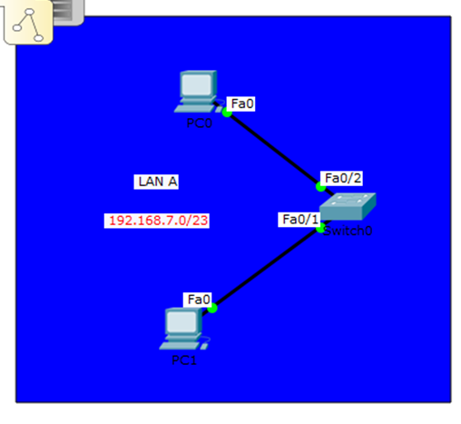
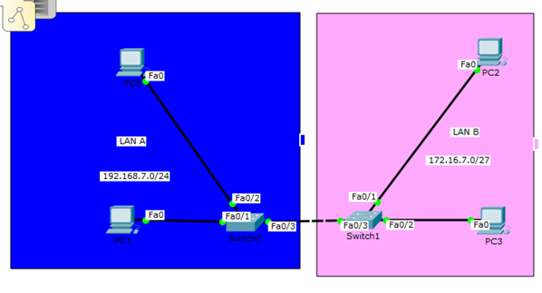
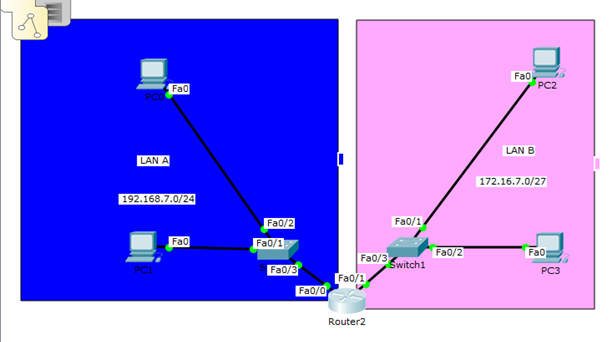
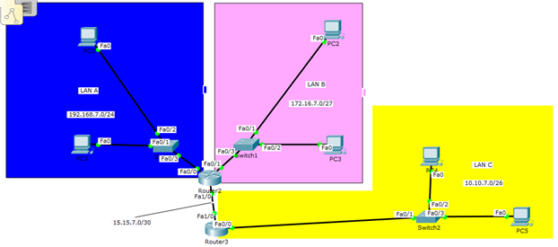

Интернет технологииМоя Wiki станица
Ваш браузер не поддерживает flexbox!
Для просмотра используйте современный браузер.
Отчёт Полины Барбашовай ИДМ-18-05
Состав группы:
1.Барбашова Полина2.Миннибаев Артём
3.Гуров Иван
Лабораторная работа №2:
1."Диаграмма": Проектирование и разработка коллективного веб-приложения с использованием html,css,js + json,xml предназначенная для построяния круговой диаграммы.2."TeleBot": Создан для тестирования по предмету Инфографка и изучению теориию по этому предмету.
Лабораторная работа №3:
"Cisco": Настройка коммутаторов и маршрутизаторов в Cisco packet tracerПодготовка к экзамену:
Билет №7 : Ответ на один из экзаменационных вопросов.
Вопрос № 1. Виды документов на автоматизированные системы. Требования к содержанию и оформлению.
Требования к содержанию документов на автоматизированные системы.
Требования к содержанию документов изложены в РД 50-34.698-90. Настоящие методические указания распространяются на автоматизированные системы (АС), используемые в различных сферах деятельности (управление, исследование, проектирование и т. п.), включая их сочетание, и устанавливают требования к содержанию документов, разрабатываемых при создании АС.
Пояснительные записки к эскизному, техническому проектам содержат разделы: общие положения; описание процесса деятельности; основные технические решения; мероприятия по подготовке объекта автоматизации к вводу системы в действие.
Более подробная информация о разделах.
В разделе «Общие положения» приводят:
- наименование проектируемой АС и наименования документов, их номера и дату утверждения, на основании которых ведут проектирование АС;
- перечень организаций, участвующих в разработке системы, сроки выполнения стадий;
- цели, назначение и области использования АС;
- подтверждение соответствия проектных решений действующим нормам и правилам техники безопасности, пожаро- и взрывобе- зопасности и т. п.;
- сведения об использованных при проектировании нормативно-технических документах;
- сведения о НИР, передовом опыте, изобретениях, использованных при разработке проекта;
- очередность создания системы и объем каждой очереди.
В разделе «Описание процесса деятельности»:
- отражают состав процедур (операций) с учетом обеспечения взаимосвязи и совместимости процессов автоматизированной и неавтоматизированной деятельности;
- формируют требования к организации работ в условиях функционирования АС. В разделе «Основные технические решения» приводят:
- решения по структуре системы, подсистем, средствам и способам связи для информационного обмена между компонентами системы, подсистем;
- решения по взаимосвязям АС со смежными системами, обеспечению ее совместимости;
- решения по режимам функционирования, диагностированию работы системы;
- решения по численности, квалификации и функциям персонала АС, режимам его работы, порядку взаимодействия;
- сведения об обеспечении заданных в техническом задании (ТЗ) потребительских характеристик системы (подсистем), определяющих ее качество;
- состав функций, комплексов задач, реализуемых системой (подсистемой);
- решения по комплексу технических средств, его размещению на объекте;
- решения по составу информации, объему, способам ее организации, видам машинных носителей, входным и выходным документам и сообщениям, последовательности обработки информации и другим компонентам;
- решения по составу программных средств, языкам деятельности, алгоритмам процедур и операций и методам их реализации.
В разделе «Мероприятия по подготовке объекта автоматизации к вводу системы в действие» приводят:
- мероприятия по приведению информации к виду, пригодному для обработки на ЭВМ;
- мероприятия по обучению и проверке квалификации персонала;
- мероприятия по созданию необходимых подразделений и рабочих мест;
- мероприятия по изменению объекта автоматизации;
- другие мероприятия, исходящие из специфических особенностей создаваемых АС.
Вопрос № 1. Виды документов на автоматизированные системы. Требования к содержанию и оформлению.
Требования к содержанию документов на автоматизированные системы.
Требования к содержанию документов изложены в РД 50-34.698-90. Настоящие методические указания распространяются на автоматизированные системы (АС), используемые в различных сферах деятельности (управление, исследование, проектирование и т. п.), включая их сочетание, и устанавливают требования к содержанию документов, разрабатываемых при создании АС. Пояснительные записки к эскизному, техническому проектам содержат разделы: общие положения; описание процесса деятельности; основные технические решения; мероприятия по подготовке объекта автоматизации к вводу системы в действие.
Более подробная информация о разделах.
В разделе «Общие положения» приводят:
- наименование проектируемой АС и наименования документов, их номера и дату утверждения, на основании которых ведут проектирование АС;
- перечень организаций, участвующих в разработке системы, сроки выполнения стадий;
- цели, назначение и области использования АС;
- подтверждение соответствия проектных решений действующим нормам и правилам техники безопасности, пожаро- и взрывобе- зопасности и т. п.;
- сведения об использованных при проектировании нормативно-технических документах;
- сведения о НИР, передовом опыте, изобретениях, использованных при разработке проекта;
- очередность создания системы и объем каждой очереди.
В разделе «Описание процесса деятельности»:
- отражают состав процедур (операций) с учетом обеспечения взаимосвязи и совместимости процессов автоматизированной и неавтоматизированной деятельности;
- формируют требования к организации работ в условиях функционирования АС. В разделе «Основные технические решения» приводят:
- решения по структуре системы, подсистем, средствам и способам связи для информационного обмена между компонентами системы, подсистем;
- решения по взаимосвязям АС со смежными системами, обеспечению ее совместимости;
- решения по режимам функционирования, диагностированию работы системы;
- решения по численности, квалификации и функциям персонала АС, режимам его работы, порядку взаимодействия;
- сведения об обеспечении заданных в техническом задании (ТЗ) потребительских характеристик системы (подсистем), определяющих ее качество;
- состав функций, комплексов задач, реализуемых системой (подсистемой);
- решения по комплексу технических средств, его размещению на объекте;
- решения по составу информации, объему, способам ее организации, видам машинных носителей, входным и выходным документам и сообщениям, последовательности обработки информации и другим компонентам;
- решения по составу программных средств, языкам деятельности, алгоритмам процедур и операций и методам их реализации.
В разделе «Мероприятия по подготовке объекта автоматизации к вводу системы в действие» приводят:
- мероприятия по приведению информации к виду, пригодному для обработки на ЭВМ;
- мероприятия по обучению и проверке квалификации персонала;
- мероприятия по созданию необходимых подразделений и рабочих мест;
- мероприятия по изменению объекта автоматизации;
- другие мероприятия, исходящие из специфических особенностей создаваемых АС.
Круговая диаграмма
FusionCharts XT will load here!
Лабораторная работа №3 "Настройка локальной сети передачи данных" Вариант 7.
Задание
1. Разместить на рабочем поле коммутатор и два компьютера и соединить их
2. Подключить консольный кабель для настройки оборудования
3. Настроить адресацию на добавленных компьютерах согласно таблице ниже без шлюза по умолчанию
4. Выполнить проверку работоспособности сети
5. Добавить на рабочее поле еще один коммутатор с двумя компьютерами и настроить адресацию из другой подсети
6. Соединить коммутаторы между собой и проверить работоспособность сети
7. В случае неработоспособности сети объяснить причины
8. Добавить маршрутизатор на рабочее поле
9. Настроить интерфейсы маршрутизатора для существующих подсетей
10. Проверить работоспособность сети
11. В случае неработоспособности сети объяснить причины
12. Указать шлюз по умолчанию и отправить сообщение
13. Добавить на рабочее поле еще один маршрутизатор
14. Подключить к нему коммутатор и компьютер
15. Настроить сетевые настройки согласно таблице ниже
16. Соединить между маршрутизаторы и настроить между ними сеть с префиксом /30
17. Проверить работоспособность сети, отправив сообщение сети A в сеть С и из сети В в сеть С
18. В случае неработоспособности сети объяснить причины
19. Настроить статическую маршрутизацию между сетями
20. Настроить на сетевых устройствах пароли для привилегированного режима
21. Настроить пароли на сетевых устройствах пароли на подключение через консоль и telnet
22. Установить баннер на сетевое оборудование
23. Проверить работу удаленного подключения
Выполнение
Пункты 1-4.

Проверка сети на работоспособность:сообщения передаются.
Пункты 5-7.

При передаче сообщения с PC2 на PC1 пакеты не могут быть переданы так как коммутаторы работают на втором сетевом уровне и не могут осуществить передачу из разных подсетей.
Пункты 8-11.

Добавление Router2 и настройка его портов не решили проблему, так как на компьютерах не указан default gateway.
Пункты 12-18.

Из локальной сети С в локальные сети А и B сообщения не идут, так как нет маршрутизации между роутерами 2-3.
Пункт 19.

Пункты 12-18.

Конец.
2. Подключить консольный кабель для настройки оборудования
3. Настроить адресацию на добавленных компьютерах согласно таблице ниже без шлюза по умолчанию
4. Выполнить проверку работоспособности сети
5. Добавить на рабочее поле еще один коммутатор с двумя компьютерами и настроить адресацию из другой подсети
6. Соединить коммутаторы между собой и проверить работоспособность сети
7. В случае неработоспособности сети объяснить причины
8. Добавить маршрутизатор на рабочее поле
9. Настроить интерфейсы маршрутизатора для существующих подсетей
10. Проверить работоспособность сети
11. В случае неработоспособности сети объяснить причины
12. Указать шлюз по умолчанию и отправить сообщение
13. Добавить на рабочее поле еще один маршрутизатор
14. Подключить к нему коммутатор и компьютер
15. Настроить сетевые настройки согласно таблице ниже
16. Соединить между маршрутизаторы и настроить между ними сеть с префиксом /30
17. Проверить работоспособность сети, отправив сообщение сети A в сеть С и из сети В в сеть С
18. В случае неработоспособности сети объяснить причины
19. Настроить статическую маршрутизацию между сетями
20. Настроить на сетевых устройствах пароли для привилегированного режима
21. Настроить пароли на сетевых устройствах пароли на подключение через консоль и telnet
22. Установить баннер на сетевое оборудование
23. Проверить работу удаленного подключения